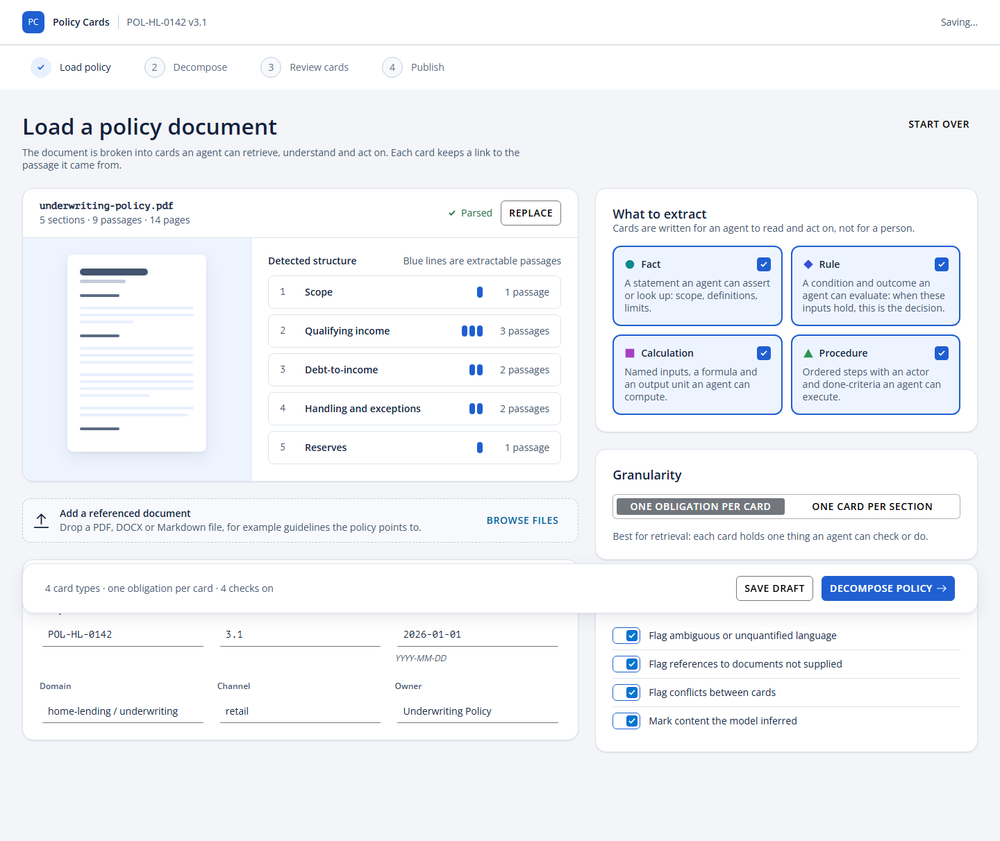
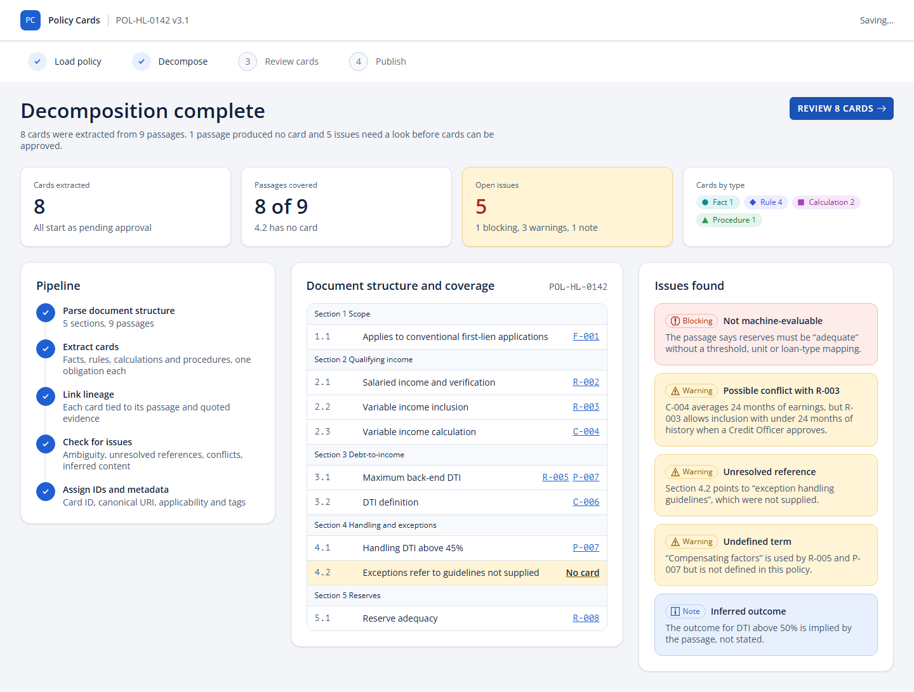
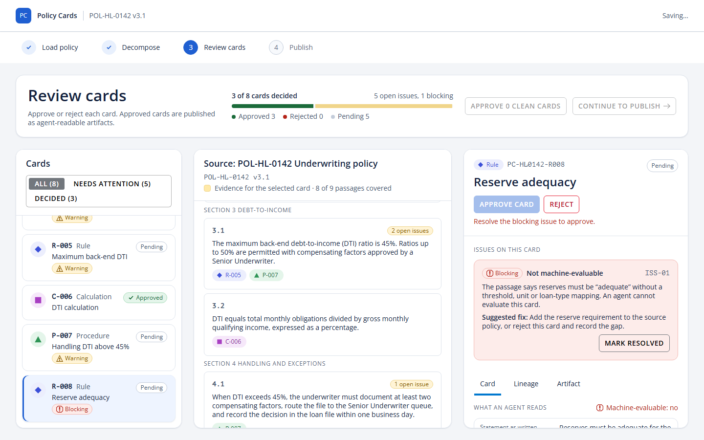
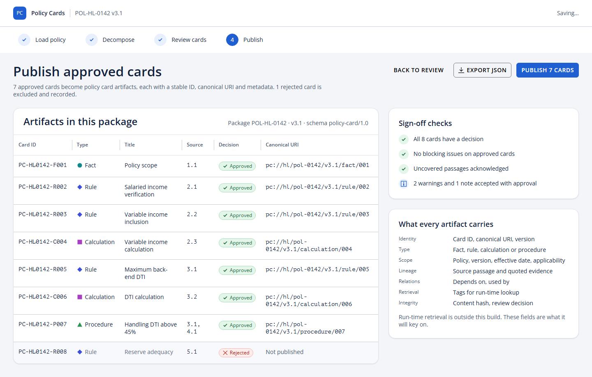

From procedural documents to agent-ready policy cards
A decomposition method that keeps a whole document cohesive, controlled and reviewable, and a review application that turns the result into published, traceable artifacts.
github.com/Chunkys0up7/decomp · October 2026
Agents need policy as logic. We have it as prose.
Hundreds of pages written for people. Agents need explicit conditions, named inputs, units, steps and done-criteria, each traceable to its source.
Chunking loses meaning
The obligation sits in a lead-in sentence; the items below it mean nothing alone.
Numbers drift
One threshold can appear nine times in a section. Restated on every card, it will go out of sync.
Nothing stands alone
A single section can cite twenty others. References look like gaps unless they are tracked.
Review doesn't scale
400 unrelated cards means proofreading, not review, and no sense of what is covered.
Meaning lives in structure
Pass 0 builds a tree, not chunks
- Every passage keeps its exact clause reference, e.g.
4.2(b)(i). - List items link to the sentence that introduces them; table cells to the sentence before the table.
- Items without a modal verb inherit their parent's obligation, prohibition or permission.
- It is deterministic. Only the final reading of modality ("may not use X and must instead use Y") goes to the model.
Five passes, with people reviewing where it is cheapest
The map is the main gate
Fixing one map entry is cheaper than fixing forty cards. Reviewers approve the plan before any card is written.
Cards fill slots
Each card fills exactly one planned slot, so the set is cohesive by construction.
Checks are code
Validation is deterministic and runs on every change; people only see failures.
The policy map: one plan for the whole document
| Part | Why it matters |
|---|---|
| Slots | Planned cards. Shared patterns become one card with parameters, not many near-copies |
| Parameters | Every stated number, once, checked against the source |
| Inputs | The only names conditions may use |
| Glossary | Defined terms and where they are defined |
| Coverage | Every obligation has a card or an explicit reason it does not |
| Issues | Policy defects, sent back to policy owners |
A parameter in the registry
"DTI_MAX": { "value": 0.45, "unit": "ratio", "passages": ["p5", "p7"] }
Cards say {{DTI_MAX}}, never "45%". The validator checks that "45%" literally appears in p5 and p7. Change it once and every dependent card is re-checked.
A card an agent can act on, and a person can check
when loan.dti_ratio > {{DTI_MAX}} then permitted only if loan.dti_ratio <= {{DTI_MAX_WITH_FACTORS}} and factors approved by a Senior Underwriter else within the limit tests 0.45 → within_limit 0.48 + approved → permitted_with_factors 0.48 → exceeds_limit 0.52 + approved → exceeds_limit
Evidence: The maximum back-end debt-to-income (DTI) ratio is 45%.
The contract
- Fills exactly one map slot, of the matching type
- Evidence is a verbatim quote; offsets are computed
- Numbers come from the registry as
{{PARAM}} - Conditions use only registered inputs
- Executable cards carry logic and passing tests
- Anything inferred is marked and backed by an issue
- Procedure branches point to rule cards
Validation catches what review would miss
| Code | Check |
|---|---|
| M1 | Every obligation is in a slot or has a coverage reason |
| M3 | Each parameter value appears in the passages it cites |
| C2 | Evidence is verbatim |
| C5b | No hard-coded policy numbers in card text |
| C6 | Inputs come from the vocabulary |
| C9 | Executable cards pass their tests |
Planted faults, all caught
| Quote reworded | C2 |
| Threshold changed 45% → 40% | M3 C9 |
| Obligation dropped from the map | M1 |
| "45%" typed into a card | C5b |
| Unknown input used | C6 |
A wrong number is caught twice: against the source text, and through the tests of every card that uses it.
What decomposing a real guide section showed
The method was piloted on a dense section of a public mortgage-industry guide: 141 passages, 38 planned cards.
Structure carries obligations
Most list items had no modal verb of their own; they inherited it.
Numbers repeat
One cut-off appeared nine times, another seven. One registry entry each.
Patterns collapse
Three fallback calculations differed only by a factor: one shared card.
References everywhere
One section cited about twenty others, tracked as external coverage.
Policies have defects
Missing thresholds, an example mistaken for a rule, alternatives with no order.
Versions overlap
Current and future versions live at once; fingerprints flag only what changed.
Architecture
Today the adapters are deterministic mocks, so every screen and test runs without a backend. A real decomposition service plugs in by returning a DecompositionResult.
Load the policy, run the decomposition


Detected structure, validated policy metadata stamped on every card, card types, granularity and checks.
Live pipeline stages, coverage by section ("4.2 has no card"), and every issue linking to the card that needs it.
Review every card with its lineage

- Source pane highlights the exact evidence for the selected card.
- Issues sit on the card; a blocking issue disables Approve and says why.
- Lineage tab: document → section → passage → card, with quotes and relations.
- Artifact tab: the JSON exactly as it will publish.
- Reopening a resolved blocker returns approved cards to pending.
- Keyboard first: arrow keys through cards, focus follows decisions.
Publish immutable, traceable artifacts

Each artifact carries
schema · card_id · uri · type · title policy · applicability source ← verbatim quotes + offsets content ← typed fields relations · retrieval tags quality · review content_hash = sha256(RFC 8785 JSON)
Meaning changes the hash; review status does not. Every artifact is schema-validated before it leaves.
Verified, not assumed
unit and component tests: IDs, hashing, reducer rules, persistence
end-to-end tests on dev and production builds
serious or critical accessibility violations on any screen or state
viewports with visual baselines and layout guardrails (1440 and 390)
npm run verify runs strict TypeScript, lint (accessibility and a rule that keeps all text in one copy catalog), design-token checks, unit tests, and Playwright: the full happy path with a schema-validated export, a keyboard-only run, reload restore, and axe scans.
Roadmap
1 · Decomposition service
A model-driven pass 1 and 2 behind the adapter, scored against reference sets with the validator.
2 · Map review step
Approve slots, parameters and coverage in the UI before cards are generated.
3 · Agent fields in review
Show parameters, inputs, logic and test results on each card.
4 · Stable IDs across versions
Slots and fingerprints: re-review only what changed.
5 · Edits and audit trail
Field-level edits, who decided what and why.
6 · Multi-document packages
Resolve references across documents; a real publish target.
Plan the whole document, then write the cards
- Structure first, so obligations are never lost.
- A reviewed map, so the set is cohesive and every number lives once.
- A strict card contract and deterministic checks, so cards are controlled.
- A review application with lineage on every screen, so people can trust what they approve.
Spec: docs/SPEC.md · Code: github.com/Chunkys0up7/decomp